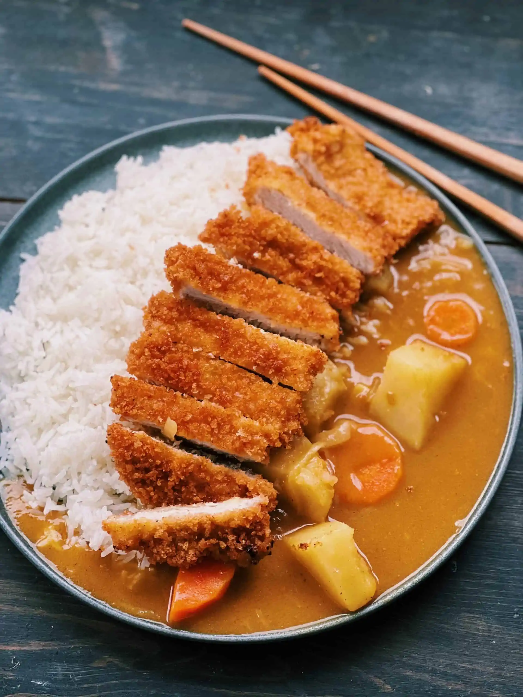
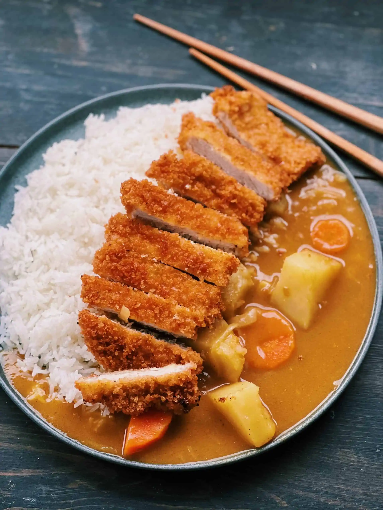

Kare Katsu
Katsu curry is just a variation of Japanese curry with a chicken cutlet on top. I used a store-bought block of Japanese curry roux which is commonly used in Japanese households. Chicken Cutlet (Japanese version of chicken schnitzel) brings the Japanese curry up to the next level. It’s so delicious and filling.
 
